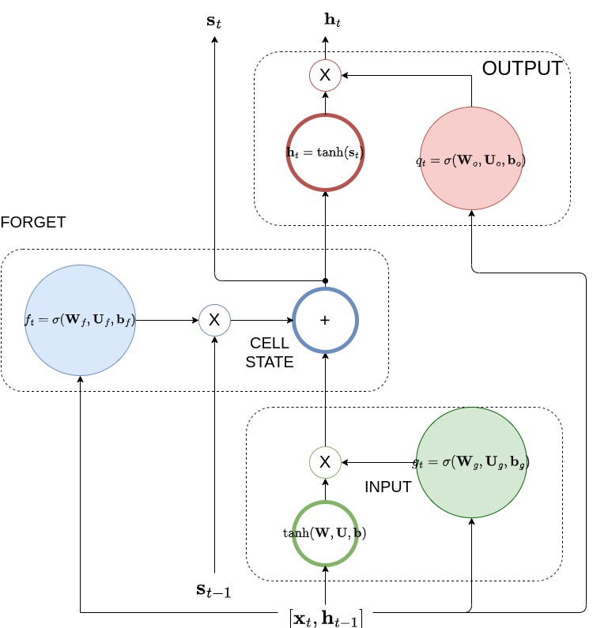

The Long Short-Term Memory (LSTM) Architecture#
In the simple RNN we have seen the problem of explodig or vanishing gradients when the span of back-propagation is large (large \(\tau\)). Using the conceptual IIR filter, that ultimately integrates the input signal, we have seen that in order to avoid an exploding or vanishing impulse response, we need to control \(w\).
This is exactly what is being done in evolutionary RNN architectures that we will treat in this section called gated RNNs. One of the best known gated RNN architectures is LSTM where the weight \(w\) is not fixed but it is determined based on the input sequence context. The architecture is shown below.

LSTM architecture: It is divided into three areas: input (green), cell state (blue) and output (red). You can clearly see the outer (\(\mathbf h_{t-1}\) )and the inner (\(\mathbf s_{t-1}\)) recurrence loops. The multipliers are Hadamard products aka they apply element-wise. Notice that if you make the input gates equal to 1.0 and the forgetting and output gates equal to 0.0, we are back to the simple RNN architecture.
Because we need to capture the input context that involves going back several time steps in the past, we introduce an additional inner recurrence loop that is effectively a variable length internal to the cell memory - we call this the cell state. We employ another hidden unit called the forget gate to learn the input context and the forgetting factor (equivalent to the \(w\) we have seen in the IIR filter) i.e. the extent that the cell forgets the previous hidden state. We employ a couple of other gates as well: the input gate and the output gate as shown in the diagram.
In the following we are describing what each component is doing in the order that the processing is done.
Notation
We use two indices - \(t\) for the unfolding sequence index and \(i\) for the cell index \(i\) of the LSTM hidden layer.
We also denote by \(\mathbf A(i,:)\), the i-th row of the matrix \(\mathbf A\).
Forward Pass#
The Input Gate#
The input gate protects the cell state contents from perturbations by irrelevant inputs to the context. The LSTM in other words learns when to let activations from the input layer into the internal state. As long as the input gate takes value zero, no activation can get in.
Quantitatively, input gate calculates the factor,
The gate uses the sigmoid function to produce a factor between 0 and 1 for each of the cells of the LSTM hidden layer - each cell is indexed by \(i\). This factor is applied to the \(i\)-th cell’s input that is the combination of a function of the previous hidden state represented by the dot product \(\mathbf W_g(i,:) \mathbf h_{t-1}^i\) and a function of the current input, represented by the dot product \(\mathbf U_g(i,:) \mathbf x_t^i\).
The Input Layer#
This is formed exactly as the input of the simple RNN layer - see earlier notes.
The Forget Gate#
The forget gate calculates the forgetting factor,
Similar to the input gate, this factor determines the amount of the earlier cell state that is needed to be preserved.
Closing, you can expect backpropagation to work similarly to simple RNN case albeit with more complicated expressions. In the LSTM workshop that follows you will have the opportunity to look at an LSTM training from scratch.
Hyperparameter optimization for LSTMs is addressed more formally “LSTM: A Search Space Odyssey”
Output Gate#
The output gate protects the subsequent cells from perturbations by irrelevant to their context hidden state.
The output gate learns when to let the hidden state out.
The Cell State#
This is the heart of the LSTM cell, the cell state is the new memory that is introduced by LSTM - all the earlier factors are used to preserve it as long as it is needed by the use case.
The parameters \(\theta_{in} = \{ \mathbf W, \mathbf U, \mathbf b \}\) are the recurrent weights, input weights and bias respectively at the input of the i-th LSTM cell.
Output Layer#
The output layer is the same as the output layer of the simple RNN. We typically see fully connected layers, softmax and other units depending on the task (classification, regression etc).
Note that when both input and output gates are closed (output 0) the input activation is trapped in the memory cell, neither growing nor shrinking, nor affecting the output at intermediate time steps.
Backward Pass#
In terms of the backwards pass, the constant error carousel enables the gradient to propagate back across many time steps, neither exploding nor vanishing. In this sense, the gates are learning when to let error in, and when to let it out. In practice, the LSTM has shown a superior ability to learn long- range dependencies as compared to simple RNNs.
Additional Resources#
Additional tutorial resources on LSTMs can be found here: